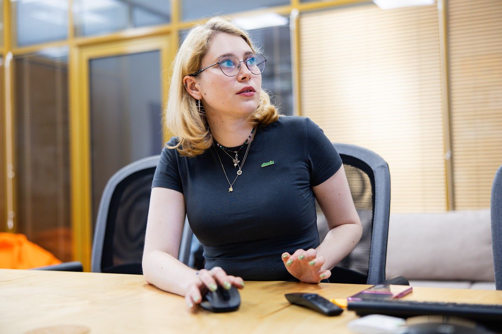
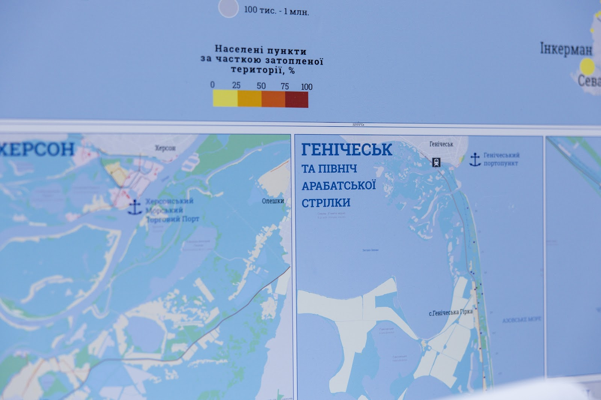
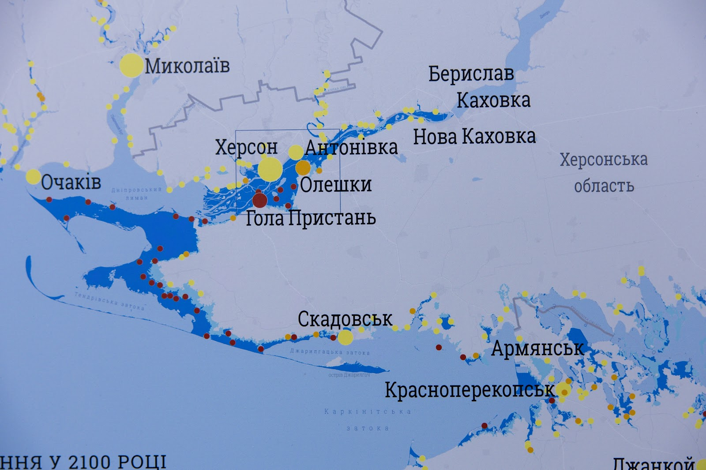
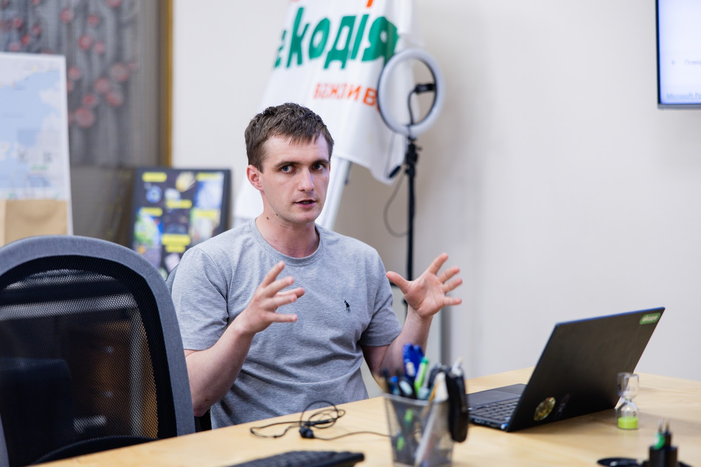
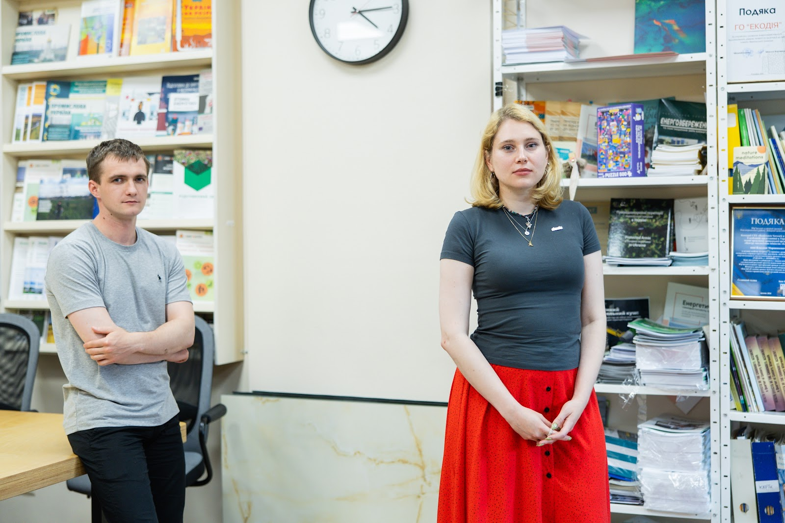
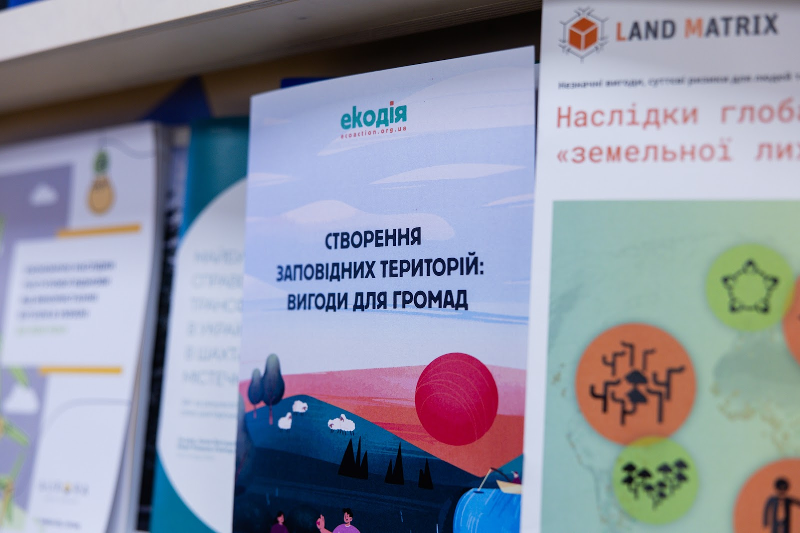
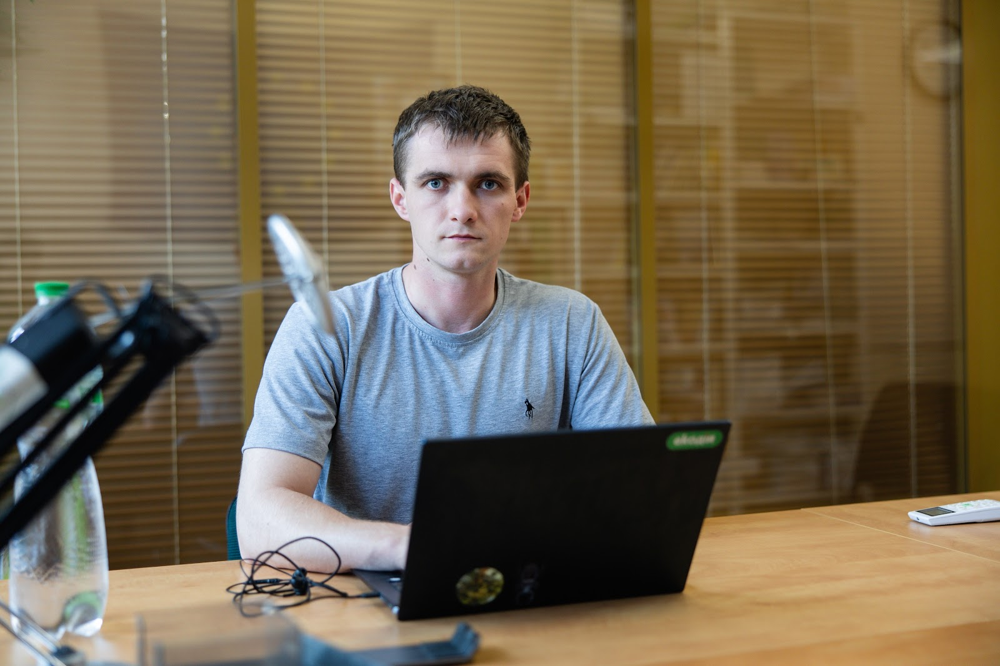
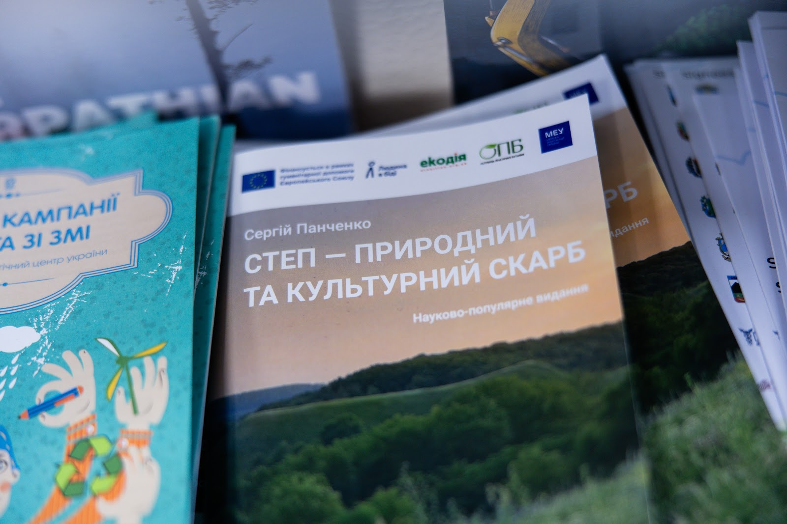
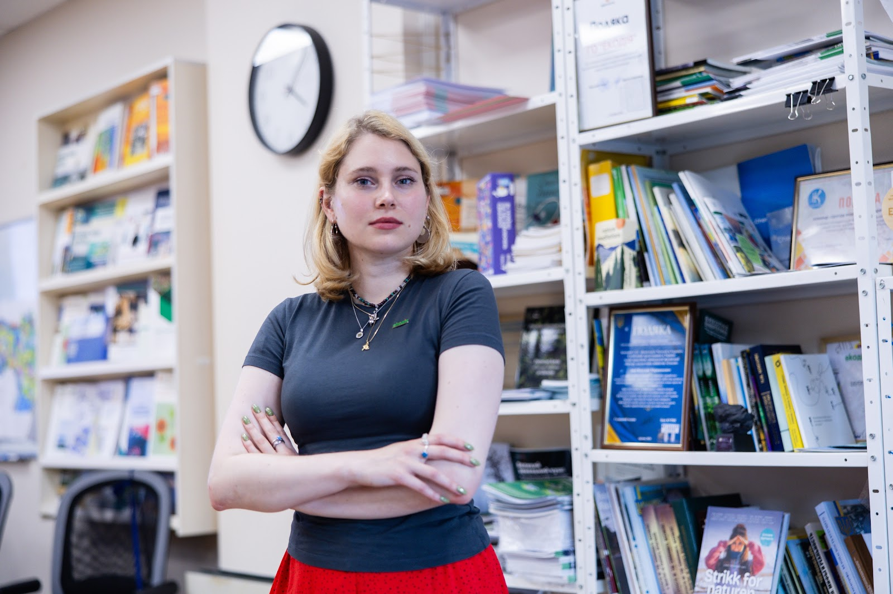

Explosion Residues on Our Tables. How the war impacts the environment and why it’s difficult to study
10.07.26
At the end of March, 2022, the Russian military damaged the oil terminal in Kalynivka, in the Kyiv region. The ecologist Anna Koriahina, who was living nearby at that time, watched the impact with her own eyes: “It’s a dozen kilometers from the house I lived in at that moment. I watched it all from start to finish: I heard the missileʼs whistle and saw it hitting the oil terminal. Then, the blaze, the fire for a couple of days, the smoke.”
Afterward, she read about hundreds of such incidents as a volunteer on the team of the center of ecological initiatives “Ecoaction”; she plotted them on a map of incidents of potential environmental harm caused by the Russian aggression. But the attack she witnessed personally affected her the most.
Today, Anna is herself an employee at Ecoation, helping over a dozen volunteers and improving the methodology for working with the map, on which almost 3,000 Russian attacks harmful to the environment have been added by now.
Back to the sources
Anna’s colleagues from Ecoation started plotting incidents on a map a couple of days after the start of the full-scale invasion: they tracked news from open sources — the white-listed Ukrainian media¹ and official announcements from the government — and added the data to a spreadsheet that, for users, transformed into an interactive map. “We have been monitoring the situation from the very first days, and we are continuing to do so today,” the ecologist says.

In August 2022, as people adapted to the reality of war and the scale of destruction continued to grow, Ecoation started recruiting volunteers. Currently, they are the ones filling the map and personally checking each incident. It’s about 15 people who have specific regions in their purview. There’s no shortage of volunteers, Anna says, there are even queues sometimes. Some people find time while serving in the Armed Forces. For instance, a military member is responsible for monitoring incidents in the Luhansk region; he operates directly on the front line and volunteers between combat missions.
The attacks are clustered into eight² categories and three tiers on the damage scale. For example, a fire at a gas station would be first-tier damage, and the extermination of endangered species would be third-tier damage. This distinction wasn’t there at the beginning. However, after Russia destroyed the dam at the Kakhovka Hydroelectric Power Plant, it became obvious that equating such a massive-scale event with, say, separate instances of mining an area is impossible. So they decided to add tiers to their data collection methodology.

The largest number of third-tier incidents has been detected in the Luhansk region. But it’s also due to the type of data available to the project: Ecoation made a conscious decision to exclude information from Russian or Russian-speaking media, Telegram channels, and other dubious sources. As a result, information on what is happening in the occupied territories reaches volunteers in aggregated reports.
“The Ukrainian Environmental Inspectorate doesn’t have direct access to all incident locations in the Luhansk region. They should have information from remote Earth observation, and, consequently, the satellite imagery shows what’s on fire. They assess the fires and report on their site that, say, this month, a certain area of forests or fields has burned down. The inspectorate calculates the losses using its own formulas. This way, the incident looks large, and according to our methodology, it gets ranked as tier three,” Bohdan Kuchenko, a specialist in ecosystem preservation, says.

“If the territory wasn’t occupied, the information would be reported differently,” Anna adds.
The largest number of strikes on industrial facilities, on the other hand, is in the Dnipropetrovsk region, also due to regional specifics: many plants and factories are located there, and its territory is large and under constant shelling because it’s close to the front lines.
After being processed by volunteers, the records undergo another round of verification. The experts at the center analyze each incident, correct the category or damage tier, and then add the information to the main database, which is directly connected to the interactive map. Complicated or untypical incidents are discussed within the team because not only the incident of destruction itself needs to be assessed, but also its potential impact on ecosystems.

Closing data
In 2022, it was much easier to collect this type of data, Anna says, because the information was more open: “The reports were up-front and very prompt. They were talking about the scale, how much, and what exactly was burning. The information was complete. When our media and government agencies began to understand that this completeness is also useful to Russians, the quantity of information diminished. Now, both the authorities and the media use phrases like ‘an object of the oil and gas industry was under attack’. Besides, they do this a day or two after the attack happened. And it can be hard to say what that object was, as, for instance, a gas station and an oil terminal are similar in substance, but they are not equal. We acknowledge that it’s the right thing to do, but it complicates the situation with data collecting for us a bit.”

The center made a conscious decision not to collaborate with the authorities to plot unpublished information on the map, because the project's goal is to spread and aggregate the currently available data, including to international audiences — foreign colleagues and media.
“Our emotions are blunted to such an extent that, when we record another incident, or even a dozen incidents, it doesn’t appall us,” Anna says. “But when I’m talking to my international colleagues or to the media, they are shocked. They don’t realize the scale and heterogeneity of the impact.”
“Currently, we even have an opposite situation: when, for example, the prosecutor’s office sends us an official request: ‘Tell us, if you have information about a certain incident that happened on this or that day’. We answer that we don’t have any specific information, as we get it from the media or from their own announcements. But it happens relatively often, and I constantly send them the same replies,” the ecologist adds.
Everything everywhere all at once
There are various types of acts of aggression: from nuclear hazards to the destruction of industrial facilities or the effects of livestock waste. “We were watching what Russia was doing and were just trying to categorize it. We had more categories earlier, but we have reordered them.”
I ask about the nuclear safety category because it may seem that such incidents would be rare. But in fact, there are dozens: power outages at nuclear power plants, drone attacks on nuclear facilities, destruction of research facilities. For instance, at the Kharkiv Institute of Physics and Technology, nuclear equipment was damaged. And in 2022, there were impacts near the facilities of the “Radon” Central Industrial Association, where nuclear waste is stored. “The impacts at such locations are less hazardous in their scale than the impact on a nuclear reactor, but it’s still damaging, and it’s still a risk of exceeding the [permissible] background radiation level,” Bohdan Kuchenko explains.

If many animals die, a hit on a farm is also plotted on the map. “Dead livestock are biological organisms, but when such a large mass of remains is decomposing, it impacts the environment and requires human intervention: organic residues seep into the groundwater or are washed away by wastewater, etc. In that case, they have to be transferred to an isolated area, and it isn’t happening,” Anna says.
This happens because, among other things, the damage is mostly dealt at the front lines or near them, and ecologists have no access to these territories or would put themselves in danger if they went there. Besides, ecological institutions lack the resources to assess and eliminate all the damage.
Quo vadis
The center considers greenhouse gas emissions one of the main consequences of the war, not just for Ukraine but for the whole world. In collaboration with the Ministry of Environmental Protection and Natural Resources, the organization is working to assess its impact. Currently, emissions are estimated at 311 million tons of CO2 equivalent³, but calculations are ongoing. “But this research includes future reconstruction and the Russian military industry that produces, besides ammunition and military vehicles, greenhouse gases as well,” Anna explains.
The war also destroys natural ecosystems in less obvious ways. The construction of thousands of kilometers of ditches, trenches, and fortifications alters the natural terrain, disrupts the water balance of the territories, and fragments animal habitats. Where, just a couple of years ago, uninterrupted natural landscapes existed, artificial barriers now arise, changing the migration routes of many species.

Besides, large mammals often leave areas of active combat, while some predators may, on the contrary, congregate temporarily next to the front lines: “For predators, for example, foxes, such territories may locally be attractive because there are many dead organisms they can feed on,” Bohdan says.
“Any large fire causes damage, especially in summer, when the active season for most animals and vegetating season for plants comes,” he adds. “A fire on a dry autumn day or at the beginning of spring is also damaging, but the damage is less severe due to most species not being active during that season.”
Pollution of soil and water sources is significant, Anna says. As a consequence of the attacks on oil terminals, industrial facilities, water treatment facilities, and hazardous-substance storage facilities, toxic compounds seep into rivers, lakes, and reservoirs. “But the Environmental Inspectorate has to assess it; they need to take measurements on site,” Anna says. “The severity of the impact has to be studied empirically. It’s obvious that we currently lack the resources to cover all incidents. Besides, there’s a safety element as well. Because inspection is a complex and lengthy process — you have to mark off the area, dig, and choose a weighted average sample.”
The explosions also impact soils and water bodies directly: “It’s a local destruction of soil cover, but it’s complete: a cavity forms where no living thing remains. Then, life returns there, but the area remains chemically polluted, and it affects the organisms that inhabit it,” Bohdan adds.

Chemicals also directly affect people's everyday lives. And it’s important to prioritize during the revival of territories, even today, especially in demined areas, because chemically polluted produce may end up on our tables.
“A farmer isn’t usually interested in the assessment of chemical pollution after demining. For them, the main thing is to return the land to active use as quickly as possible. But, unfortunately, part of the area may turn out to be unfit for growing safe products,” Bohdan explains. “Heavy metals from shell casing, especially from older ammunition, and some explosives, like TNT or hexogen, partially remain in soils, especially when an ammunition storage site gets hit. Unfortunately, these chemicals are relatively stable in the environment, which means they can stay for many years, get deeper into the soil, and end up in water.”
That’s why it’s vitally important to conduct chemical analysis of the soils and water after demining: “At some areas, a remediation is required, and then the land may return to use, and in some areas, remediation will be so costly that there’s no sense to invest in it now and it’s cheaper to wait for a couple of decades until the area is purified by natural biochemical processes.”
But in these cases, a state policy and support of the farmers who cannot use their land is required — “so that they don’t end up left in the lurch (as they have to run their business, feed their families, and pay their workers) and don’t start using the land at any cost.”

Monitoring, however, is a complex process, and, besides, it began to really take shape in Ukraine only after the full-scale invasion started: despite the law on it having existed since 1998, the required changes and new resolutions on the system’s functioning were added only in 2023–2024. This creates many problems. “The monitoring system is currently taking shape in a very limited scope because of the war conditions. A large part of the territories is inaccessible. And the problem is we don’t have background data: what was on occupied territories before the full-scale invasion,” Bohdan says. “Accordingly, if we even get accurate data on the current level of pollution of the area by certain chemicals, it’s difficult to discern what part of the pollution was caused by the war because we don’t know the earlier data. In some places, metallurgy or the chemical industry could have had an impact. And the background level is very difficult to ‘cut off’, at least if we want to demand compensation for damages.”
“We can’t turn the clock back, but currently, it’s important to collect the most complete data possible for the beginning of 2022, organize it, and use it as a base for further investigation. Currently, the technical resources of the Environmental Inspectorate have improved, but we don’t know if it’s enough.”
Footnotes
1. The white list of media is a list of reliable media, published and updated every half year by the NGO Institute of Mass Information, and based on a two-step monitoring of adherence to professional journalism standards.
2. There's also a ninth category, "Other military actions", that was used only in 2022. Under the current methodology, the incidents aren't added to this category. However, Ecoaction decided to keep these incidents on the map because they also represent Russian war crimes.
3. CO2 equivalent is a mass of CO2 equivalent to the mass of other greenhouse gases in terms of their potential impact on climate change.
The reportage is published with the support of the Alfred P. Sloan Foundation.